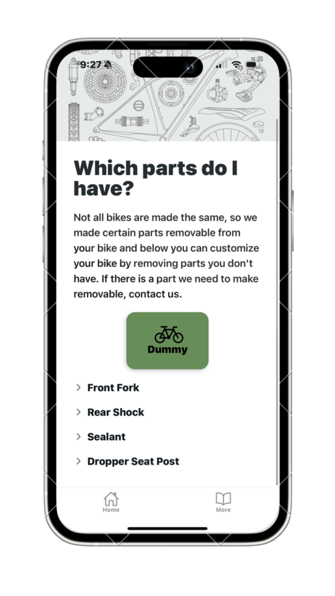

This application integrates with a third-party application,
Strava, a social media platform for athletes. Strava tracks the miles you
accumulate, and our application utilizes this data to calculate the
percentage of wear on your bicycle.
This screen serves as the central hub for monitoring the
wear and tear of your bicycle’s components. It organizes the information of
all your bicycle’s parts in descending order of their level of wear. By
tapping the (i) icon, you can access detailed information about each
component.
This pop-up window provides comprehensive information for viewing
and updating your part details.
This page will allow you to access the settings for your bicycle.
You can change add shock notes (ratings such as PSI, rebound and sag percentage),
customize your parts, set a default bike,
and send feedback!
You can utilize this provided page to update bike information such as predetermined
part wear percentages, used miles, and estimated life miles
Here is the location to modify the components that are physically
present on your bicycle. You can remove items such as suspension, sealant, and
a dropper seatpost from the application.

Ready to Never Miss Maintenance Again?
Join many cyclists who trust KOR to keep their bikes in perfect condition.